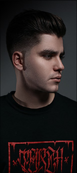
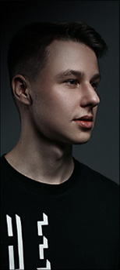
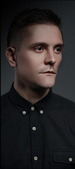
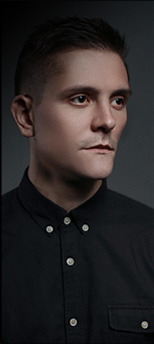
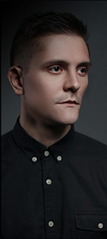
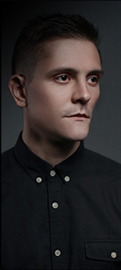

 



6 Wings — музыкальная группа, объединившая две столицы. Название — это отсылка к библейским Серафимам, имевшим 6 крыльев, которые «воспламеняли сердца и очищали их подобно молнии».
Хотя группа и выбрала его, даже не подозревая, что оно имеет такой бэкграунд (название просто приснилось одному из основателей группы — Илье Маркову), творчество группы порой выполняет схожую с «шестикрылым» функцию: зажигают огонь в сердцах. 6 Wings — это единство
противоположностей: имидж городских обывателей и искренние тексты о «вечном»: о дружбе, о любви, о жизни и ее смысле, музыка от тяжелого прогрессив метала до аранжировки в стиле поп.
Всего за год существования 6 Wings нашли собвственное звучание, сделав базой высокую техничность исполнения и глубинные знания музыкальной теории и прибавив к этому творческую спонтанность и откровенность.
Наша вторая видеоработа. Песня посвящена проблеме дружеских отношений, распадающихся из-за расходящихся жизненных путей. В клипе приняли участие 30 слушателей 6WINGS.
Режиссер: Алексей Мисюров
Дата выпуска: 27 сент. 2017 г.
Лайв-видео на песню in the past стало для нас пробой пера в создании музыкальных видео. В процессе работы мы познакомились с Алексеем Мисюровым — его подход к съемкам и сияющий позитив стал очень близок группе.
Режиссер: Алексей Мисюров
Дата выпуска: 15 дек. 2016 г.